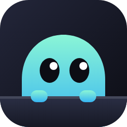
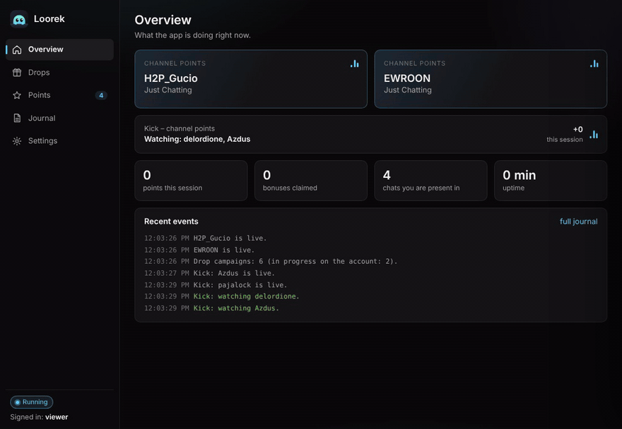

Loorek Source on GitHubLoorek is a small Windows app that lives in the tray. It keeps you present on Twitch and Kick streams, claims bonuses and farms Twitch Drops – without a browser tab and without playing video.

Watches up to two channels at once – all that Twitch counts – and claims every bonus for you.
Collects points on the Kick channels you pick, on as many at once as you set.
Queue games, see every campaign and reward, and let Loorek watch, switch streams and claim.
It only reports to the service that you are watching. A fraction of what one browser tab needs.
An ordinary desktop program that never touches other processes, so anti-cheat has nothing to react to.
New versions come from GitHub releases, are checked against their SHA-256 and swapped in automatically.
One file, no installer. It lands in the tray next to the clock.
A separate sign-in window opens for Twitch and Kick. Your everyday browser profile is never touched.
Order is priority. Close the panel – everything keeps running in the background.
No. Automated watching is against the terms of service of Twitch and Kick. You use Loorek at your own risk.
Nowhere. It is stored in the data folder next to the program and is sent only to Twitch and Kick themselves.
Twitch credits watch time on at most two streams at once. More would earn nothing.
The file is not code-signed. The source is public and every release is built from it by GitHub Actions.